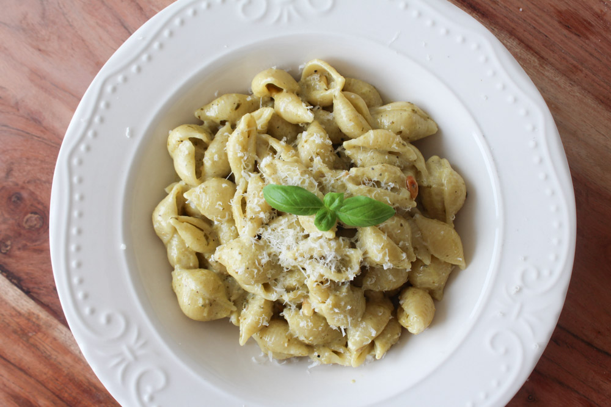

Pesto pasta

Beskrivelse
Pasta i en cremet pestosauce er altid et hit på de travle hverdage. Pastaretten tager ingen tid at bikse sammen – den er færdig på meget kort tid og kræver kun få ingredienser.
Du kan bruge lige den pesto, som du allerbedst kan lide. I denne opskrift brugte jeg en basilikumspesto, som nok er en af de mest solgte pestoer. Men skulle jeg lave retten i dag, så vil jeg klart anbefale at prøve den med peberfrugtpesto eller tomatpesto.
Ingredienser
- 190 gram pesto
- 1 løg (hakket)
- 50 gram pinjekerne
- 2 fed knust hvidløg
- 300 ml fløde
- 300 gram pasta (som du koger)
Fremgangsmåde
- Kom pinjekernerne på en tør pande og rist dem til de er gyldne. Tag dem så af panden.
- Kom lidt olie på panden og steg løg og hvidløg. Når løgene er bløde tilføjes pesto, fløde, salt og peber.
- Husk at smage til. Kom så pinjekernerne i igen og tilføj den kogte pasta.
- Server med lidt grana ost på toppen.